1，构建低门槛的发布场景，激活存量关系，帮助已经建立关系的用户快速找到可聊天的人
2，面对陌生人建联场景，弥补现有异步社交场景的不足，探索实时化社交方向
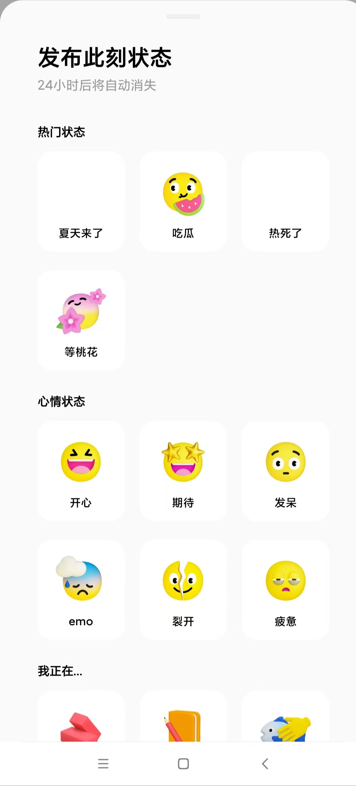
1，发布的状态审核通过后，会给followed的异性发push消息
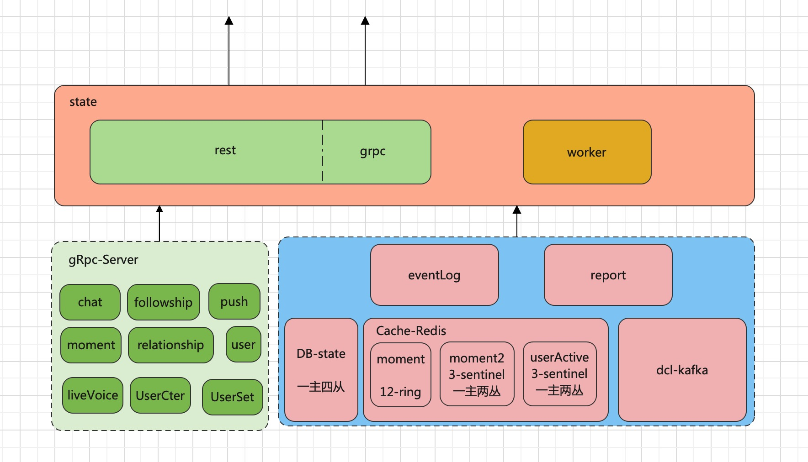
1，服务器的DB版本：PostgreSQL 13.5 （最新 PostgreSQL 15.2）
| Schema | Name | Type | Owner |
|---|---|---|---|
| yay | medias | table | dbuser_dba |
| yay | rel_id_seq | sequence | dbuser_dba |
| yay | state_emoj_categories | table | dbuser_dba |
| yay | state_emoj_categories_id_seq | sequence | dbuser_dba |
| yay | state_emojs | table | dbuser_dba |
| yay | state_emojs_id_seq | sequence | dbuser_dba |
| yay | state_likes | table | dbuser_dba |
| yay | states | table | dbuser_dba |
| yay | users | table | dbuser_dba |
1，users表：来源dcl.users upsert,或发布动态的新用户 2，states表：24小时内状态记录，逻辑删除 3，state_like表：状态点赞表
| Column | Type | Collation | Nullable | Default |
|---|---|---|---|---|
| id | bigint | not null | next_id() | |
| user_id | integer | not null | ||
| value | character varying(2000) | not null | ||
| location | json | |||
| emotion | json | |||
| text_theme | json | |||
| media_type | media_type | |||
| status | status | not null | 'default'::status | |
| created_time | timestamp without time zone | not null | timezone('UTC'::text, now()) | |
| updated_time | timestamp without time zone | not null | timezone('UTC'::text, now()) | |
| biz | biz | not null | 'moment'::biz | |
| emotion_id | integer | not null | 0 | |
| geo_location | geometry |
Indexes:
"states_pkey" PRIMARY KEY, btree (id)
"state_geo_location_idx" gist (geo_location)
"states_biz_idx" btree (biz)
"states_created_time_geo_location_idx" gist (created_time, geo_location)
"states_created_time_idx" btree (created_time)
"states_created_time_idx1" btree (created_time) WHERE status = 'default'::status AND biz = 'moment'::biz AND media_type = 'text'::media_type
"states_status_idx" btree (status) WHERE status <> ALL (ARRAY['deleted'::status, 'hidden'::status, 'pending'::status])
"states_user_id_idx" btree (user_id)
1, status:hidden, pending, default,deleted
2, media_type:image, video, text
3, biz:moment
| Column | Type | Collation | Nullable | Default |
|---|---|---|---|---|
| id | bigint | not null | next_id() | |
| user_id | integer | not null | ||
| state_user_id | integer | not null | ||
| state_id | bigint | not null | ||
| recalled | boolean | not null | false | |
| status | status | not null | 'default'::status | |
| created_time | timestamp without time zone | not null | timezone('UTC'::text, now()) | |
| updated_time | timestamp without time zone | not null | timezone('UTC'::text, now()) |
Indexes:
"state_likes_pkey" PRIMARY KEY, btree (id)
"state_likes_state_id_user_id_unique_idx" UNIQUE, btree (state_id, user_id)
"state_likes_user_id_idx" btree (user_id)
"state_likes_user_id_idx1" btree (user_id) WHERE status = 'default'::status
| Column | Type | Collation | Nullable | Default |
|---|---|---|---|---|
| id | integer | not null | ||
| gender | gender | |||
| birthdate | date | |||
| status | user_status | not null | 'default'::user_status | |
| created_time | timestamp without time zone | not null | timezone('UTC'::text, now()) | |
| updated_time | timestamp without time zone | not null | timezone('UTC'::text, now()) |
Indexes:
"users_pkey" PRIMARY KEY, btree (id)
"users_birthdate_idx" btree (birthdate)
"users_status_idx" btree (status) WHERE status <> ALL (ARRAY['banned'::user_status, 'inactivated'::user_status, 'deleted'::user_status, 'violation'::user_status, 'pending'::user_status])
"yay_users_id_status" btree (id) WHERE status = ANY (ARRAY['banned'::user_status, 'inactivated'::user_status, 'deleted'::user_status])
| Column | Type | Collation | Nullable | Default |
|---|---|---|---|---|
| id | integer | not null | nextval('state_emojs_id_seq'::regclass) | |
| emoji_url | character varying(1024) | |||
| emotion_text | character varying(64) | |||
| background_color | character varying[] | '{}'::character varying[] | ||
| icon_color | character varying[] | '{}'::character varying[] | ||
| category_id | integer | not null | ||
| display | boolean | not null | false | |
| sort | bigint | not null | 0 | |
| status | status | not null | 'default'::status | |
| created_time | timestamp without time zone | not null | timezone('UTC'::text, now()) | |
| updated_time | timestamp without time zone | not null | timezone('UTC'::text, now()) |
Indexes:
"state_emojs_pkey" PRIMARY KEY, btree (id)
"state_emojs_category_id_idx" btree (category_id)
"state_emojs_sort_idx" btree (sort)
"state_emojs_text_unique_key" UNIQUE, btree (emotion_text)
1，moment rest get /v2/followConfig 调用state grpc获取
| Column | Type | Collation | Nullable | Default |
|---|---|---|---|---|
| id | integer | not null | nextval('state_emoj_categories_id_seq'::regclass) | |
| name | character varying(64) | not null | ||
| sort | bigint | not null | 0 | |
| display | boolean | not null | false | |
| status | status | not null | 'default'::status | |
| created_time | timestamp without time zone | not null | timezone('UTC'::text, now()) | |
| updated_time | timestamp without time zone | not null | timezone('UTC'::text, now()) |
Indexes:
"state_emoj_categories_pkey" PRIMARY KEY, btree (id)
"state_emoj_categories_name_unique_key" UNIQUE, btree (name)
"state_emoj_categories_sort_idx" btree (sort)
| id | name | sort | display | status | created_time | updated_time |
|---|---|---|---|---|---|---|
| 16 | 热门状态 | 10 | t | default | 2022-12-02 08:23:25.396 | 2022-12-02 08:23:25.396 |
| 17 | 心情状态 | 9 | t | default | 2022-12-02 08:23:25.428 | 2022-12-02 08:23:25.428 |
| 18 | 我正在... | 8 | t | default | 2022-12-02 08:23:25.482 | 2022-12-02 08:23:25.482 |
| 19 | 找人一起 | 7 | t | default | 2022-12-02 08:23:25.543 | 2022-12-02 08:23:25.543 |
| Column | Type | Collation | Nullable | Default |
|---|---|---|---|---|
| id | bigint | not null | next_id() | |
| user_id | bigint | not null | ||
| resource_type | resource_type | |||
| resource_id | bigint | not null | ||
| index | integer | not null | ||
| location | json | |||
| country_id | integer | not null | 0 | |
| picture_identifier | character varying(200) | not null | ||
| picture_width | integer | not null | 0 | |
| picture_height | integer | not null | 0 | |
| picture_dhash | bigint | not null | 0 | |
| video_identifier | character varying(200) | not null | ''::character varying | |
| video_width | integer | not null | 0 | |
| video_height | integer | not null | 0 | |
| video_duration | double precision | not null | 0 | |
| shoot_time | timestamp without time zone | not null | timezone('UTC'::text, now()) | |
| status | status | not null | 'default'::status | |
| created_time | timestamp without time zone | not null | timezone('UTC'::text, now()) |
Indexes:
"medias_pkey" PRIMARY KEY, btree (id)
"medias_resource_id_type_index_idx" btree (resource_id, resource_type, index)
| 类型 | 接口名 | httpMethod | 备注 |
|---|---|---|---|
| rest | /v2/users/:uid/states | POST | 发布状态 |
| rest | /v2/users/:uid/states | GET | 如果http header中的 userId=uid，则自己看自己24小时内，没被删除的状态，否则看别人24小时内正常的状态 |
| rest | /v2/users/:uid/states/:sid | GET | 获取userId（http header中的）下24小时内stateId=sid，没被逻辑删除的状态详情 |
| rest | /v2/users/:uid/states/:sid | POST | 逻辑删除状态 |
| rest | /v2/users/:uid/states/:sid | DELETE | 逻辑删除状态 |
| rest | /v2/users/:uid/states/:sid/likes/me | PUT | 状态点赞 |
| rest | /v2/users/:uid/states/:sid/likes/me | DELETE | 逻辑删除点赞 |
| rest | /v2/users/:uid/states/:sid/likes/me | POST | 逻辑删除点赞，内部调用的DELETE |
| rest | /v2/users/:uid/state-counters | PATCH | 更新红点，cache.ClearUnreadState |
| rest | /v2/users/:uid/state-counters | POST | 同patch |
| rest | /v2/users/:uid/state-counters | GET | 获取红点，已废弃 |
| rest | /v2/states | GET | 获取状态广场用户 |
| rest | /v2/meets | GET | 获取状态广场盲盒用户，请求量少，可能app上藏的太深了 |
| grpc | StateService.FindByUserIds | GET | 批量获取用户状态信息 |
| grpc | StateEmotionService.FindAllStateEmotion | GET | 分页获取状态emoji配置信息 |
1，红点逻辑：post state 会发dcl.state.userState ，审核之后，会发dcl.moderation.userState。dcl审核通过之后，给这个用户的matchedUsers，每个人都新增一个未读计数，并设置当前最新状态
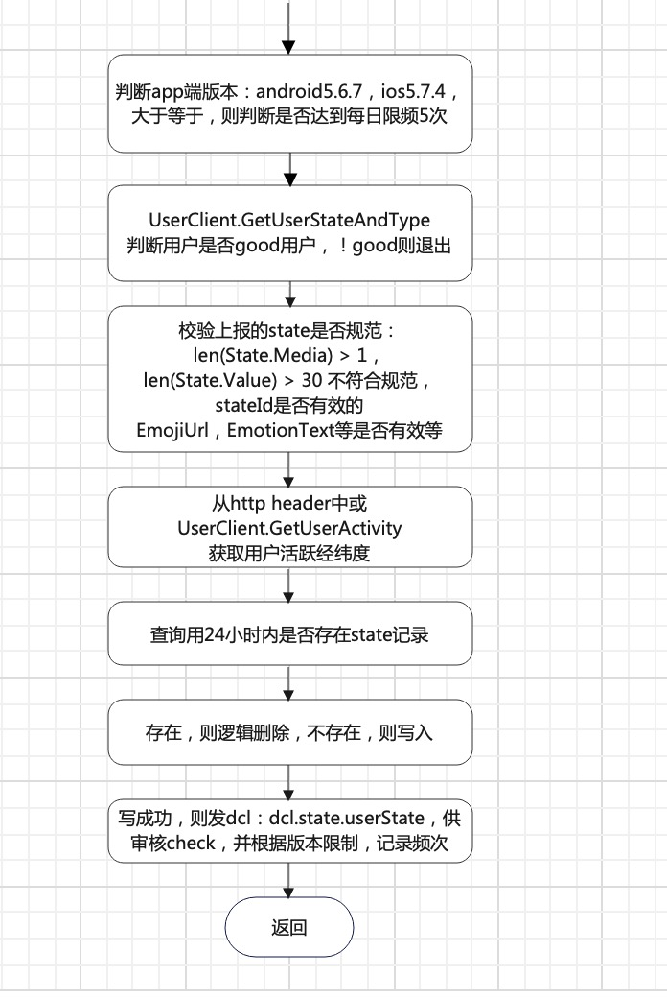
1，新用户，则存入用户表
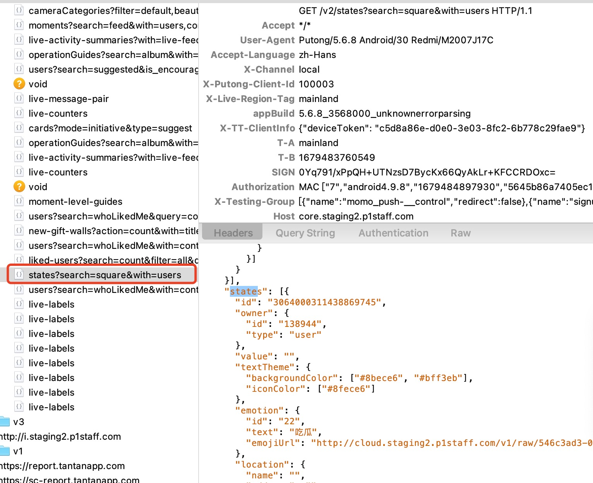
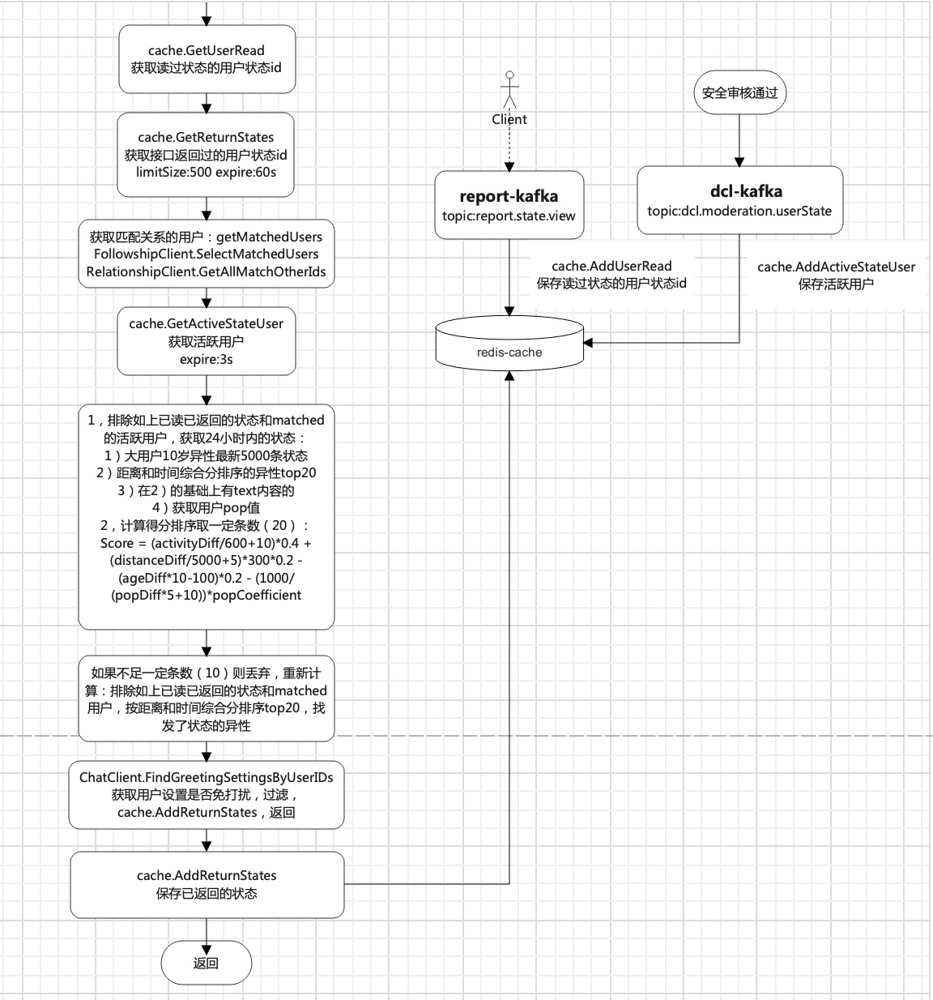
1，算分公式：((ST_DistanceSphere(ST_Point(?, ?), s.geo_location) / 5000)::integer + 5)*300 + ((EXTRACT(EPOCH FROM CURRENT_TIMESTAMP AT TIME ZONE 'UTC' - s.created_time) / 600)::integer + 10) AS score
2，ab服务，还会调用chat的grpc获取用户过热等级，根据过热等级，继续过滤
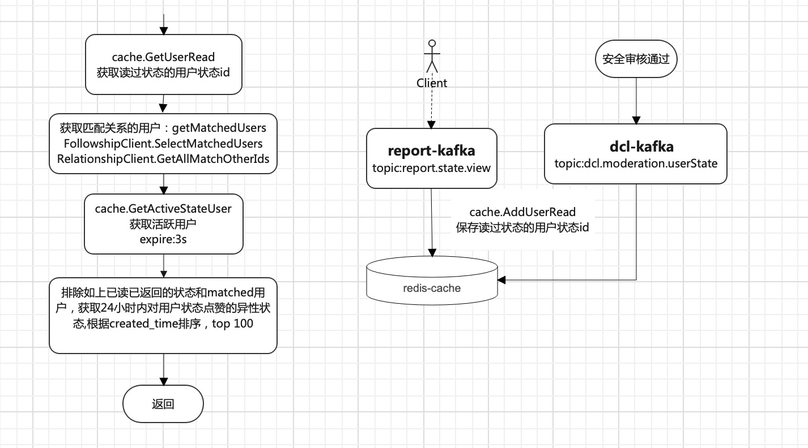
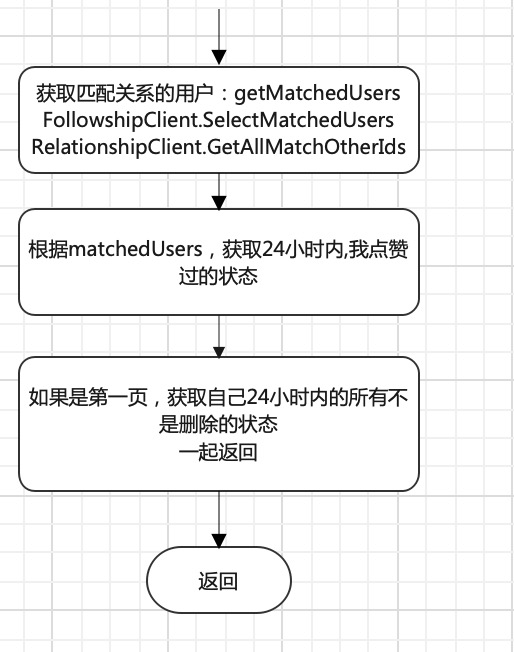
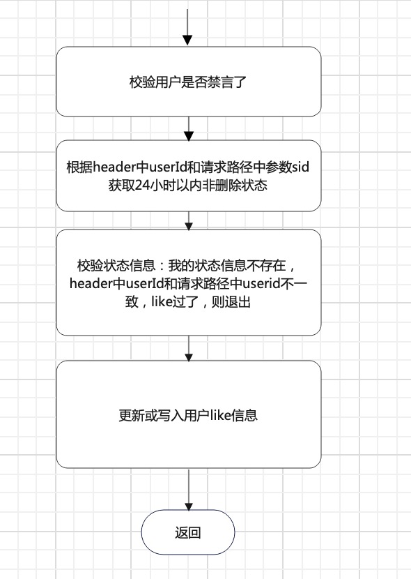
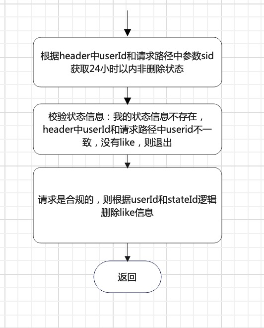
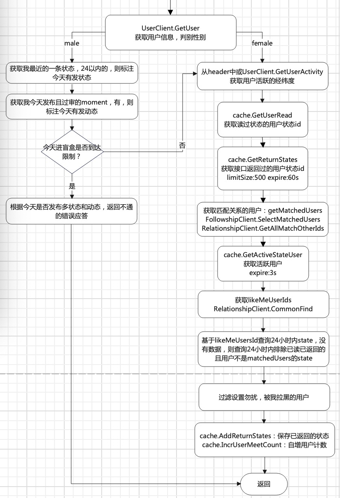
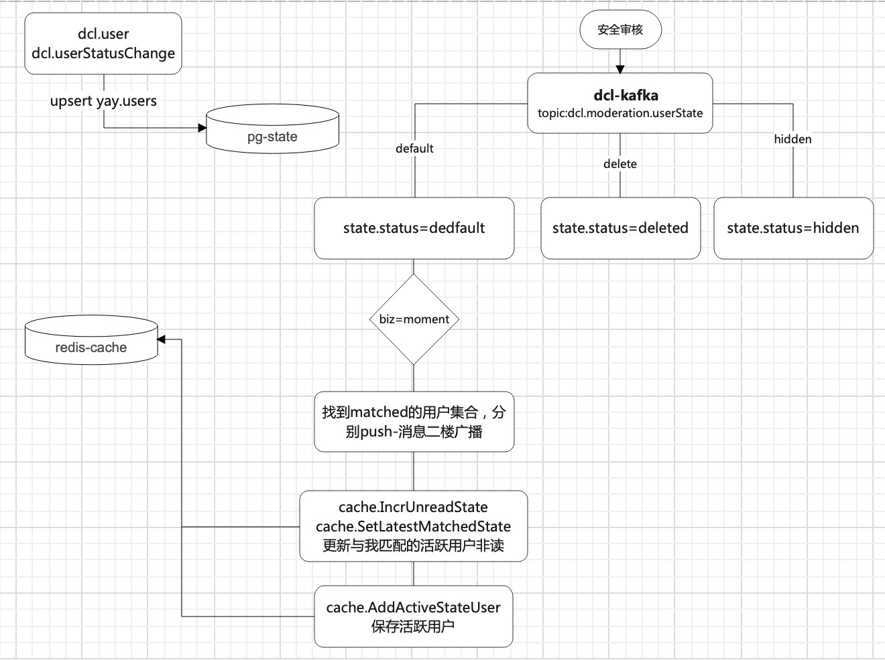
1，给异性follower push消息
1，广场的自动滑动的状态不支持手动自由滑动，或者滑动的不流畅
2，页面布局上，有的功能点藏的很深，应该告知引导或教育用户，例如盲盒，/v2/meets接口的qps很低